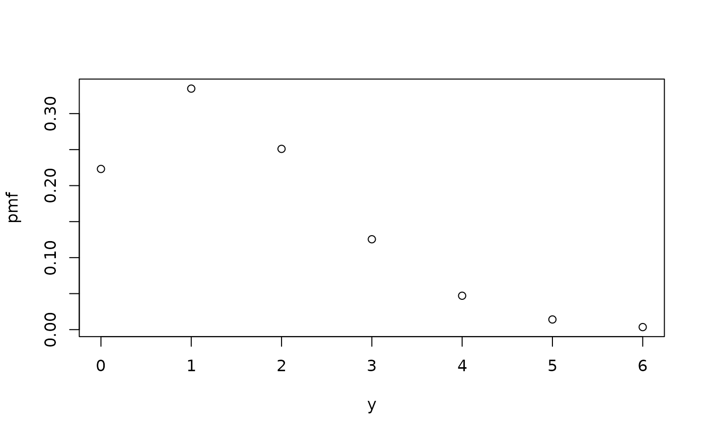
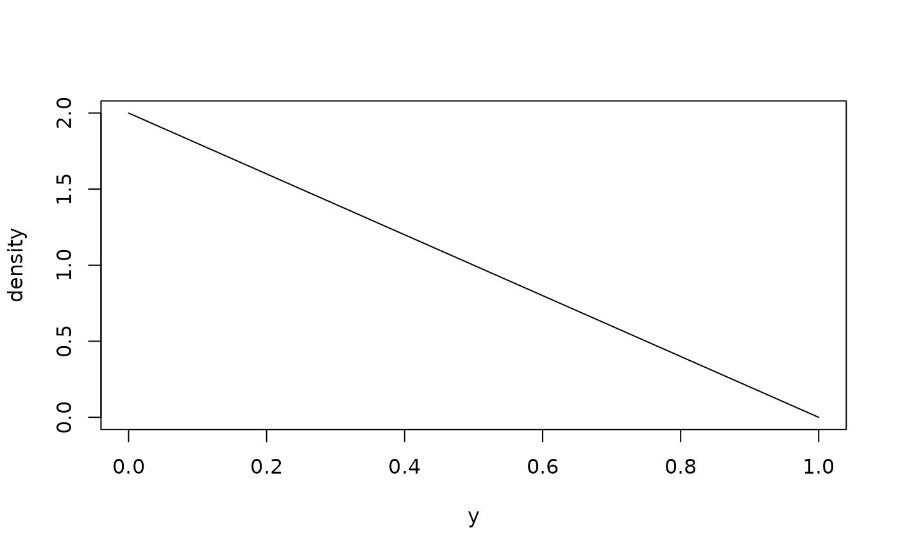
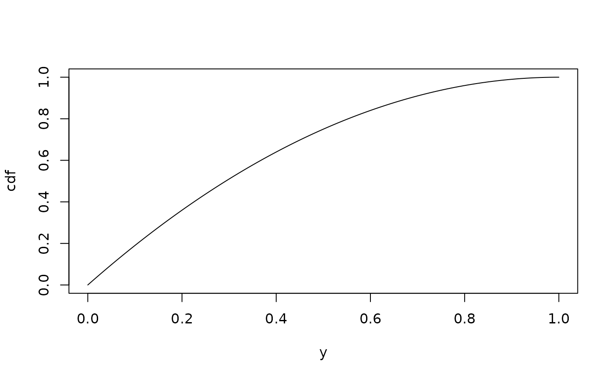

distionary: Create and Evaluate Probability Distributions
Source:R/distionary-package.R
distionary-package.RdCreate and evaluate probability distribution objects from a variety of families or define custom distributions. Automatically compute distributional properties, even when they have not been specified. This package supports statistical modeling and simulations, and forms the core of the probaverse suite of R packages.
Overview
The distionary package provides a comprehensive framework for working with probability distributions in R. With distionary, you can:
Specify probability distributions from common families or create custom distributions.
Evaluate distributional properties and representations.
Access distributional calculations even when they're not directly specified.
The main purpose of distionary is to implement a distribution object that powers the wider probaverse ecosystem for making probability distributions that are representative of your data.
Creating Distributions
Use the dst_*() family of functions to create distributions from
common families:
dst_norm(),dst_exp(),dst_unif(), etc. are some continuous distributions.dst_pois(),dst_binom(),dst_geom(), etc. are some discrete distributions.dst_empirical()is useful for creating a non-parametric distribution from data.
You can also make your own distribution using the
distribution() function, which allows you to specify
any combination of distributional representations and properties. For this
version of distionary, the CDF and density/PMF are required
in order to access all functionality.
Evaluating Distributions
A distribution's representations are functions that fully describe the
distribution. They can be accessed with the eval_*() functions.
For example, eval_cdf() and eval_quantile()
invoke the distribution's cumulative distribution function (CDF)
and quantile function.
Other properties of the distribution can be calculated by functions of the
property's name, such as mean() and range().
Random Samples
Generate random samples from a distribution using
realise().
Getting Started
New users should start with the package vignettes:
vignette("specify", package = "distionary")- Learn how to specify distributions.vignette("evaluate", package = "distionary")- Learn how to evaluate distributions.
Author
Maintainer: Vincenzo Coia vincenzo.coia@gmail.com [copyright holder]
Other contributors:
Amogh Joshi [contributor]
Shuyi Tan [contributor]
Zhipeng Zhu [contributor]
Examples
# Create a Poisson distribution.
poisson <- dst_pois(lambda = 1.5)
poisson
#> Poisson distribution (discrete)
#> --Parameters--
#> lambda
#> 1.5
# Evaluate the probability mass function.
eval_pmf(poisson, at = 0:4)
#> [1] 0.22313016 0.33469524 0.25102143 0.12551072 0.04706652
plot(poisson)

# Get distribution properties.
mean(poisson)
#> [1] 1.5
variance(poisson)
#> [1] 1.5
# Create a continuous distribution (Normal).
normal <- dst_norm(mean = 0, sd = 1)
# Evaluate quantiles.
eval_quantile(normal, at = c(0.025, 0.5, 0.975))
#> [1] -1.959964 0.000000 1.959964
# Create a custom distribution.
my_dist <- distribution(
density = function(x) ifelse(x >= 0 & x <= 1, 2 * (1 - x), 0),
cdf = function(x) ifelse(x >= 0 & x <= 1, 1 - (1 - x)^2, 0),
.vtype = "continuous",
.name = "Linear"
)
plot(my_dist)

plot(my_dist, "cdf")

# Even without specifying all properties, they can still be computed.
mean(my_dist)
#> [1] 0.3333333